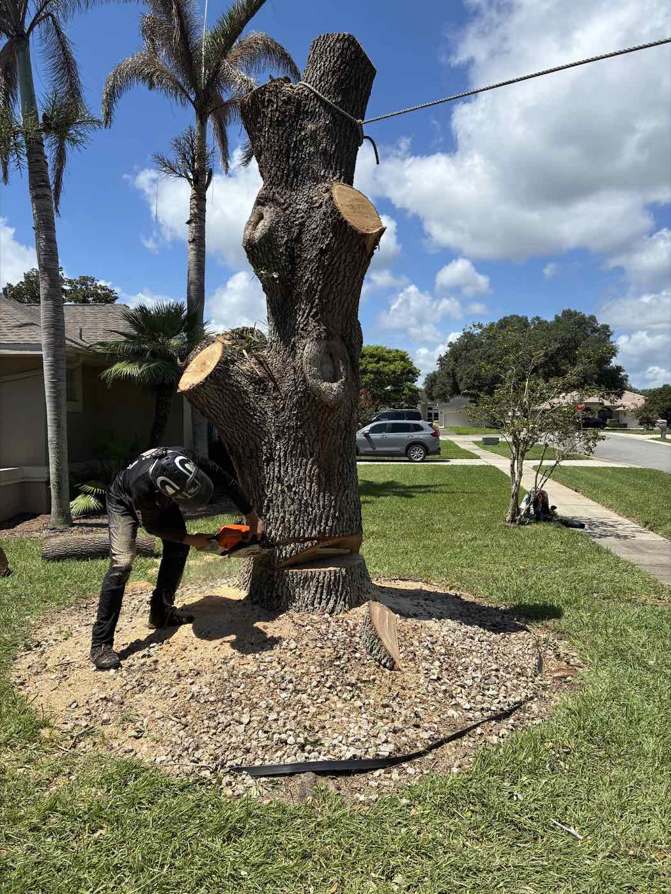
Tree Servicein Titusville, FL
Tree trimming, tree removal, stump grinding and storm cleanup for homes and properties across Brevard, Volusia, Seminole and Orange counties.
Our Tree Services
From a single overgrown oak to a full lot, we handle the work and the cleanup.
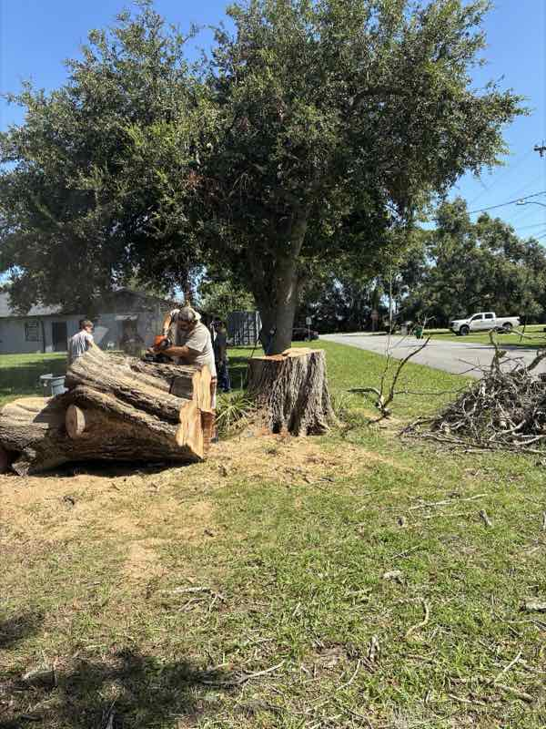
01Tree Removal & Storm Damage
Safe removal of hazardous, dead or storm-damaged trees, and a clean yard when we leave.
Learn more →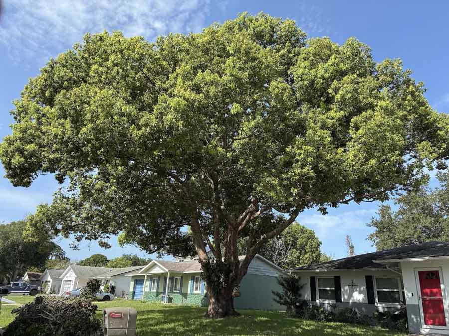
02Tree Trimming & Pruning
Pruning, shaping and canopy thinning for healthier, safer, better-looking trees, palms included.
Learn more →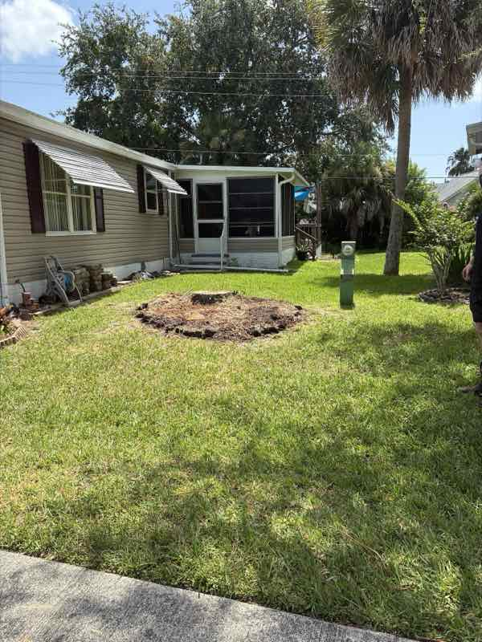
03Stump Grinding & Cleanup
Old stumps ground below ground level, with the chips and debris cleaned up.
Learn more →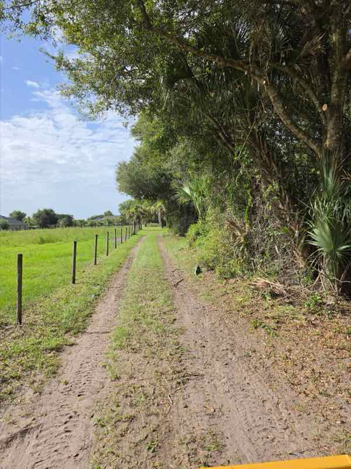
04Land Clearing
Trees, brush and debris cleared to get your property ready for its next phase.
Learn more →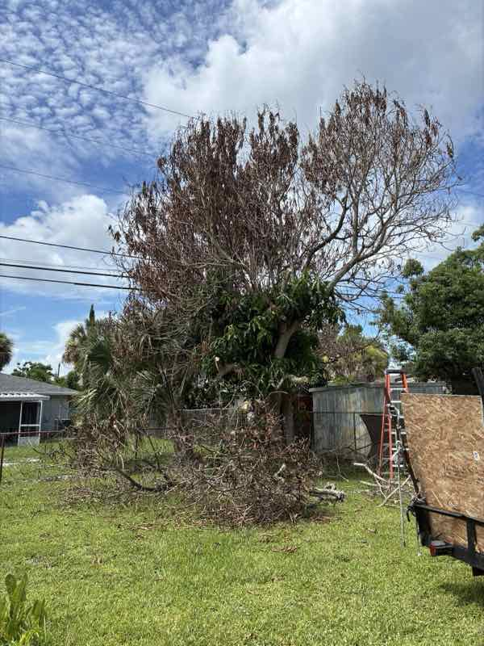
05Hurricane & Storm Cleanup
Rapid storm cleanup and debris removal to restore safety and peace of mind.
Learn more →Not sure what you need?
Tell us about your trees and we'll take a look and give you a free estimate.
Get a Free Estimate →Local Crew.
Clean Work.
A Titusville-based tree service that shows up, listens and leaves your yard better than we found it.
- Safety-first approachCareful, controlled work that protects your home, your landscape and our crew.
- On time, as scheduledOur customers keep telling us the same thing: we show up when we say we will.
- Thorough cleanupWe haul away the branches, logs and debris. No mess left behind.
- Reliable and honestHonest assessments, clear pricing and guidance tailored to your trees and budget.
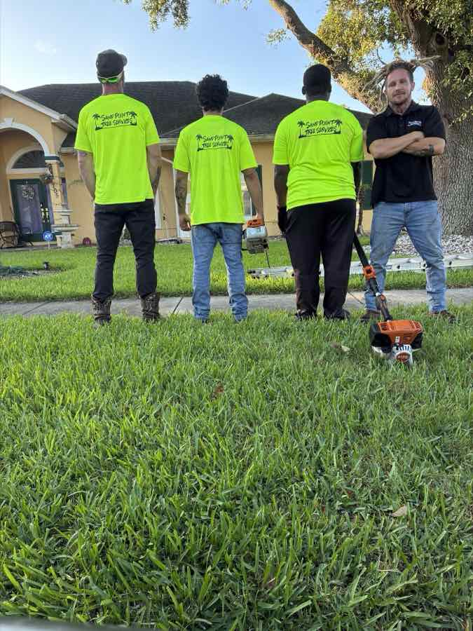
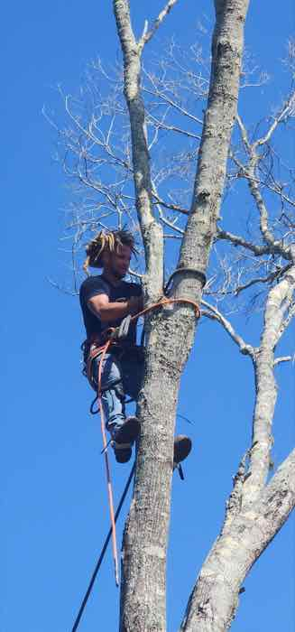
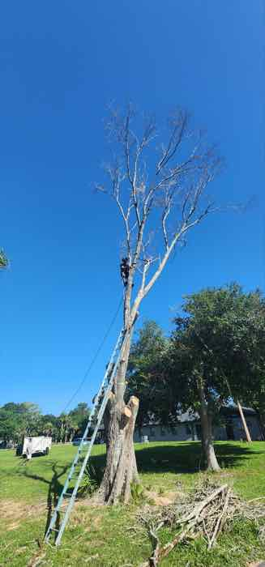
What Customers Say
I called Vern to get a quote and he was out within 2 days to quote and did the tree work that very week! He and his worker did an excellent job taking down a dead tree, trimming down my live oak and also trimming up my 3 palms. He did amazing work and cleaned the property up before he left. Great service, great pricing and I would highly recommend this local company for your tree project.
Vern and his team started by trimming several of our very large oak trees, and then we had them take down a massive oak tree that was rotting. They worked hard, price was very good, and they cleaned everything up after finishing. Would recommend Sand Point Tree Services and have recommended them to many neighbors and clients!
Vern did an excellent job from start to finish. He was professional, showed up when he said he would, and worked efficiently while keeping the area clean and safe. The quality of the work exceeded my expectations, and his pricing was fair for the service provided. I would definitely recommend his tree service to anyone looking for reliable and professional work.
I’ve used Sand Point Tree Services many times personally as well as using them to take care of problem trees on rental properties.. They always do a great job! Very respectful , and conscientious about cleanup and leaving things better than they found it. Highly recommend.
They are very professional, quick, and courteous. They did a wonderful job cutting down our big Tree . They cleaned up everything and took care of all the tree mess. My Husband and I were very pleased on how they treated our yard . We highly recommend this Tree Company to anyone.
Highly recommend Vern and Sand Point Tree Services if you are looking for a job done well at a realistically affordable price. There when scheduled from the first meeting until the last. Beautiful results!! Definitely would use this service again!!
We have used this tree service several times. Vern does great work & I highly recommend him. Such a hard worker and so pleasant to talk to. Listens to what you ask him to do and he will make sure you are happy with what he has done.
Paul and his co-worker were communicative, knowledgeable and attentive to work they were doing on the palms in my yard. They were very professional and left my yard looking great and my palms cut to perfection!
Vern showed up on time. Showed me his liability policy which I think is important. Was careful to listen to what I wanted. Cleaned up and took everything with him. Very polite and friendly. Hired him twice
Vern was awesome! Came out when he said he would, and was on-time. We all know that’s not very common. I would highly recommend him and his services!
Great communication. Cleanup was spotless. Sand point tree services puts pride into their work. Thanks
Excellent service fast and very clean recommend 100%
Had a great experience. I highly recommend!
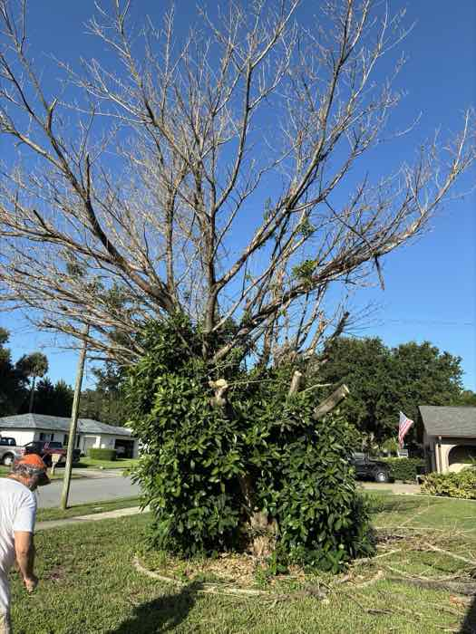
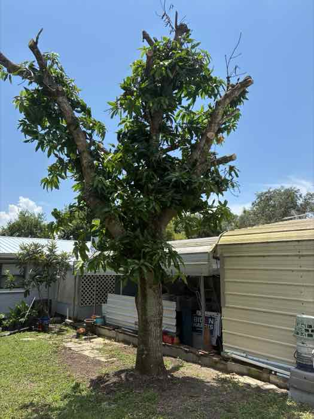
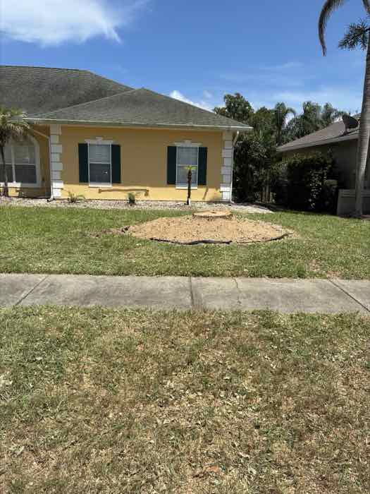
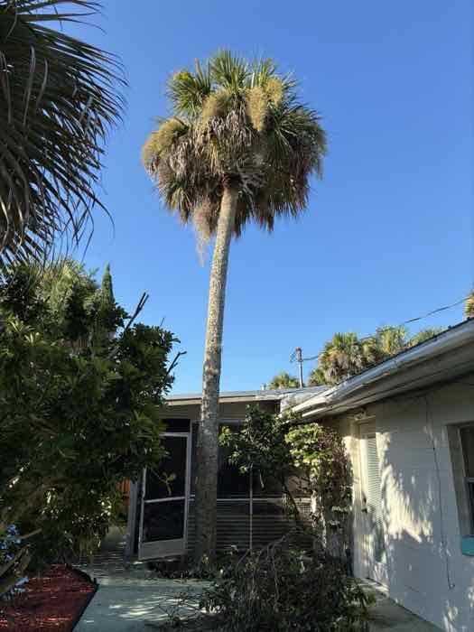
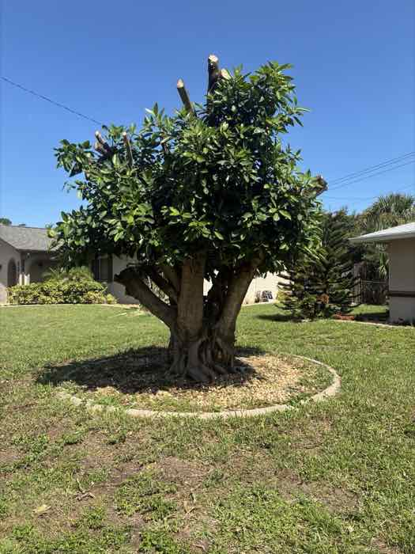
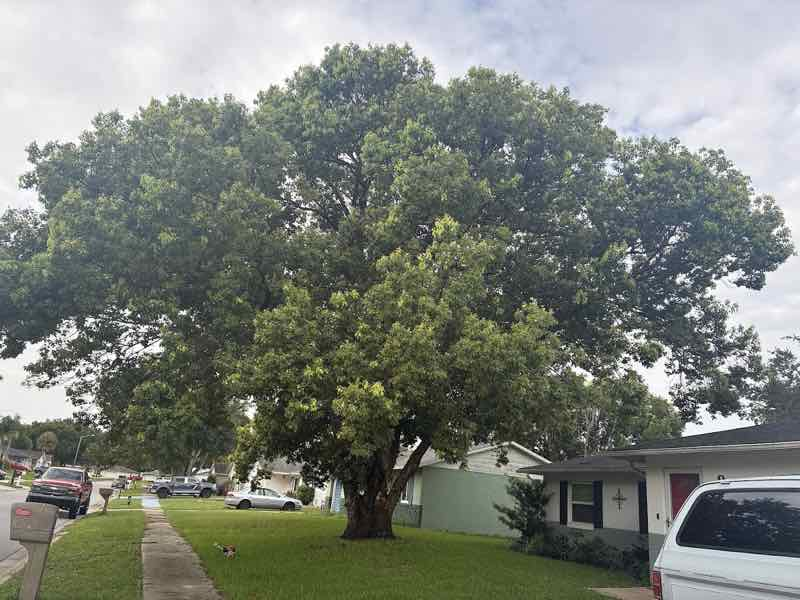
Serving Central Florida
Based in Titusville, we serve homes and properties throughout Brevard County and the surrounding counties.
Brevard County
- Titusville
- Mims
- Port St. John
- Cocoa
- Rockledge
- Palm Bay
Volusia County
- New Smyrna Beach
- Edgewater
- Deltona
- DeLand
- Daytona Beach
Seminole County
- Sanford
- Oviedo
- Winter Springs
- Lake Mary
Orange County
- Orlando
- Winter Park
- Apopka
- Christmas
Don't see your town? Call (321) 746-8933 and ask.
Get Your Free Estimate
Send us a few details about the job and we'll get back to you. For storm damage or anything urgent, call or WhatsApp us.
- Call or text(321) 746-8933
- WhatsAppMessage us
- HoursOpen every day, 9 AM – 6 PM
Frequently Asked Questions
Do you offer emergency tree removal services?
Yes, we provide emergency tree removal and storm damage response to protect your property promptly.
How quickly can you respond after a storm?
We prioritize emergency calls and aim to respond as soon as possible to assess and address storm-related hazards.
What should I do if a hazardous tree threatens my property?
Contact us immediately for a thorough assessment. We can recommend safe removal or mitigation measures.
How often should I have my trees pruned?
It depends on the tree species and growth rate. Generally, annual or bi-annual pruning helps maintain optimal health.
Will pruning harm my trees?
When done correctly by experienced arborists, pruning promotes healthy growth and does not harm your trees.
How does stump grinding work?
We use specialized equipment to grind the remaining stump below ground level, eliminating tripping hazards and preparing the area for replanting or construction.
Is cleanup included?
Yes. Stump grinding includes removal of the debris and wood chips, and after tree removal or land clearing we clean up so your property is ready for its next use.
What does land clearing involve, and how long does it take?
Land clearing includes removing trees, brush and debris to prepare the land for construction or landscaping. It depends on the size and complexity of the site, but generally ranges from a few days to a week.
What areas do you serve?
We're based in Titusville and serve Brevard County, including Mims, Port St. John, Cocoa, Rockledge and Palm Bay, as well as Volusia, Seminole and Orange counties.